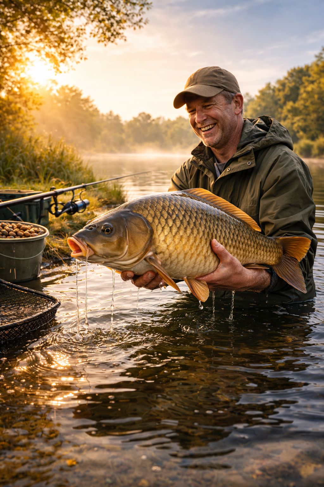
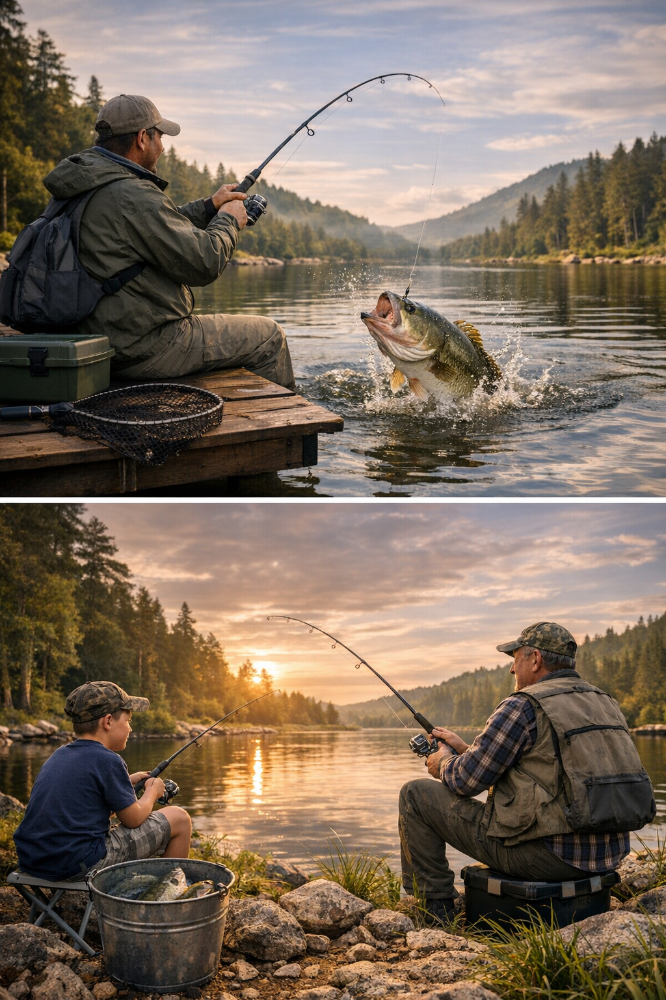
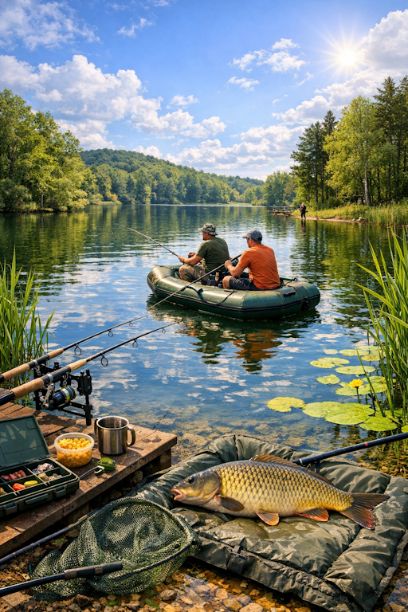
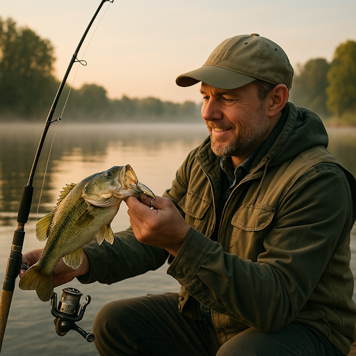
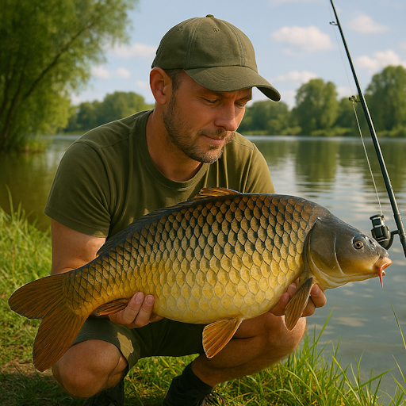
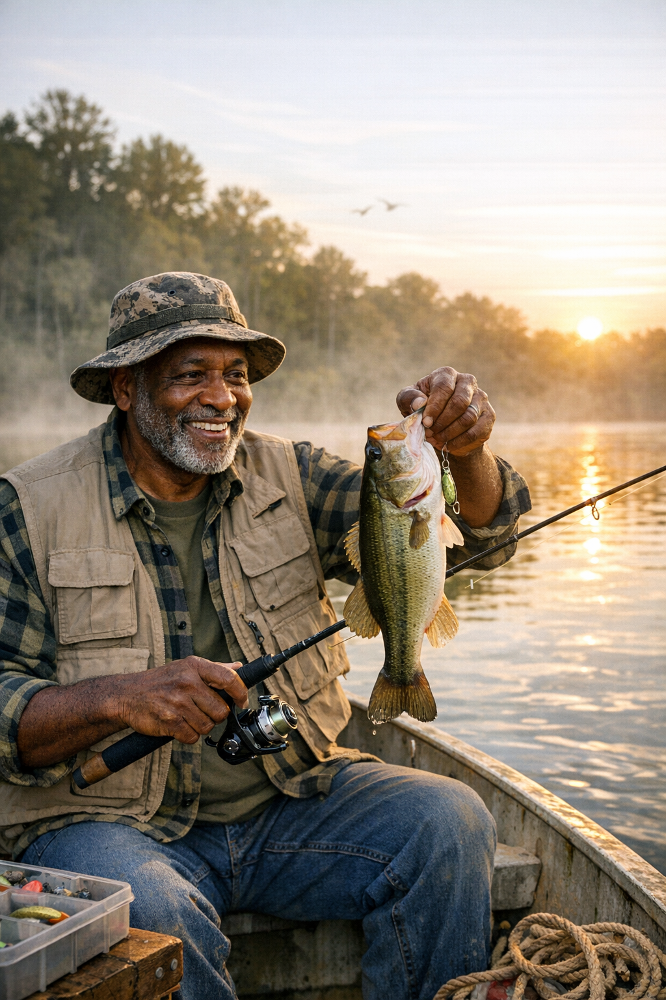

Fishing Experience







Fishing is a calming activity that helps people escape from the noisy and fast-paced world. Time spent near the water promotes relaxation and mental clarity.
The quiet surroundings, fresh air, and natural sounds create a peaceful atmosphere. Fishing allows people to slow down and enjoy the moment.
For many, fishing is more than a hobby – it is a way to relax, recharge, and reconnect with nature.
Carp Fishing – A Skill and Passion
Carp fishing is one of the most rewarding forms of angling. It requires patience, skill, and a deep understanding of fish behaviour. Whether you are targeting common carp, mirror carp, or grass carp, success depends on knowing where they feed, what they eat, and how they respond to different conditions.
Baits and Lures
The choice of bait is crucial to successful carp fishing. Boilies are one of the most popular baits – they are specially prepared pellets with a hard outer shell that resists smaller fish and attracts large carp. Sweetcorn is another classic choice, simple but effective, and often combined with other baits for better results.
Pellets and dough-based baits work well in different seasons and water temperatures. In warmer months, flavoured baits with vanilla, fruit, or fish extracts can increase your catch rate significantly. Bread, though traditional, still attracts carp but is best used in combination with more consistent baits.
For those using artificial methods, soft lures and floating bread imitations can be effective. Carp are intelligent fish that can become selective, so varying your bait strategy based on their current feeding patterns is key.
The Fishing Experience
A successful carp fishing session is about more than just catching fish. It is about spending hours by the water, observing nature, reading the weather and water conditions, and adapting your approach accordingly. The anticipation during those moments when your rod bends, and you feel the pull of a large carp is unforgettable.
Whether fishing alone in peaceful solitude or with friends sharing stories and techniques, carp fishing offers a unique blend of challenge, relaxation, and connection to the natural world. Each session teaches you something new about the fish, the water, and yourself.
For many anglers, the true reward is not just the weight of fish caught, but the memories made, the skills honed, and the peace found in nature. This is what makes carp fishing a lifelong passion.